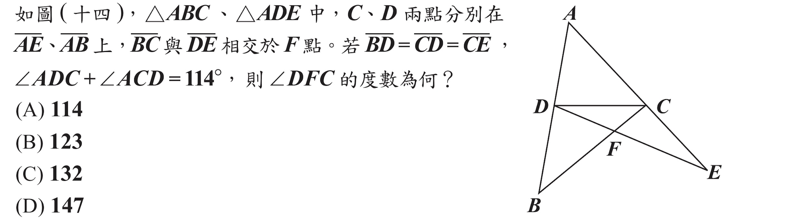
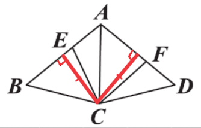

年度解析+等級對照表
104 年會考數學解析：選擇題的高壓與末端天險
104 年會考數學呈現出鮮明的難度分佈特性，全卷在選擇題區間設下了多重障礙。
選擇題難度密集：全卷共有 11 題通過率低於 0.5，顯示中段以後的題目皆具備相當的鑑別度。
壓軸魔王（第 24、25 題）：本年度最強的鑑別度高度集中在選擇題最後兩題。這兩題的通過率跌破 0.3 的「極難區間」，是決定頂尖標示 A++ 的絕對分水嶺。
非選題難度回穩：相較於選擇題的密集打擊，該年度的非選擇題敘述簡潔、難度定位在「普通」，主要側重於基礎邏輯與計算的完整呈現。
NUMA 策略提醒： 104 年的考題告訴我們，即便前面的選擇題壓力極大，也要為非選題預留體力，因為非選反而是該年的補分熱區。
等級加標示與答對題數對照表

等級加標示人數百分比統計表

試題疑義
104年國中教育會考試題疑義表104年會考-數學詳解
第一部分：選擇題（1~25題）
1.
答案
\((D)\)
詳解
原式 \(=(-\frac32)\times
(-\frac{13}{4})\times \frac23\)
\(=\frac32\times \frac{13}{4}\times
\frac23\)
\(=\frac{13}{4}\)
2.
答案
\((B)\)
詳解
\(L\) 為垂直線，\(M\) 為水平線
兩線交於 \((3, -2)\)
所以選 \((B)\)
3.
答案
\((B)\)
詳解
四分位距 \(=Q_3-Q_1\)
\((A)\ Q_3-Q_1=50-20=30\)
\((B)\ Q_3-Q_1=70-20=50\) (最大)
\((C)\ Q_3-Q_1=80-40=40\)
\((D)\ Q_3-Q_1=70-50=20\)
4.
答案
\((D)\)
詳解
原式 \(=3^4-7^2+\frac{2^6}{2^3}\)
\(=81-49+8\)
\(=40\)
5.
答案
\((A)\)
詳解
\(\overline{OD}\) 為弦心距，所以
\(D\) 為中點。
\(\overline{BD}=\frac12\overline{BC}=6\)
\(\overline{OB}=\frac12\overline{AB}=8\)
\(\overline{OD}=\sqrt{\overline{OB}^2-\overline{BD}^2}=\sqrt{8^2-6^2}=2\sqrt7\)
\(\triangle
OBD=\frac12\overline{BD}\cdot\overline{OD}=\frac12\times6\times2\sqrt7=6\sqrt7\)
6.
答案
\((C)\)
詳解
\(-2x(3x-2)^2+3=(3x-2)[(-2x)(3x-2)]+3\)
商式 \(=-2x(3x-2)\)
餘式 \(=3\)
商式+餘式 \(=-2x(3x-2)+3=-6x^2+4x+3\)
7.
答案
\((A)\)
詳解
右邊魷魚形狀為從 \(A\) 開始，
剪兩個相鄰的側邊，再剪兩個相對的底邊。
所以選 \((A)\)
8.
答案
\((B)\)
詳解
\((B)\ \sqrt{(-5)^6}=5^3\)
9.
答案
\((C)\)
詳解
\(200\div 0.9\approx 222\)
\(200\) 元可以買原價 \(222\) 元的餐點
\(222-120＝102\) 元
只要小於 \(102\)
元的餐點，打九折後都可以買到
所以有 \(9\) 種餐點可以選
10.
答案
\((C)\)
詳解
弦切角＝所夾弧的一半
\(\angle BO_1D=40^\circ\Rightarrow
\overset\frown{BD}=40^\circ\)
\(\angle CO_2E=60^\circ\Rightarrow
\overset\frown{CE}=60^\circ\)
\(\angle
ABC=\frac12\overset\frown{BD}=20^\circ\)
\(\angle
ACB=\frac12\overset\frown{CE}=30^\circ\)
\(\angle
BAC=180^\circ-20^\circ-30^\circ=130^\circ\)
11.
答案
\((D)\)
詳解
略
12.
答案
\((C)\)
詳解
剩下 \(24-6=18\) 張
其中 O 有 \(12-4=8\) 張
所以抽出 O 的機率為 \(\frac{8}{18}=\frac49\)
13.
答案
\((D)\)
詳解
\(36:48=21:(x-4)\)
\(\Rightarrow
36(x-4)=48\times21\)
\(\Rightarrow
x-4=\frac{48\times21}{36}=28\)
\(\Rightarrow x=32\)
14.
答案
\((C)\)
詳解
\((C)\ x^2-8x-20=(x-10)(x+2)\)
15.

答案
\((D)\)
詳解
\(\triangle ABC\)
為鈍角三角形，所以外心在三角形外部。
\(\overline{BC}\) 中垂線 \(x=\frac12\)
外心在中垂線上，所以在第四象限。
16.
答案
\((B)\)
詳解
\((A)\) \((5\times 13)^2-15^2=(65+15)(65-15)=80\times
50=4000\)
\((B)\) \(4^2\times 17-18^2=16\times
17-324=272-324=-52\)
\((C)\) \(9^2\times 21^2-13^2=81\times
441-169=35721-169=35552\)
\((D)\) \(2^2+31^2-12^2=4+961-144=821\)
17.
答案
\((C)\)
詳解
\(a_1=12\), \(d=27\)
\(a_n=a_1+(n-1)d=12+(n-1)\times27=27n-15\)
\(19+320=339\)
\(a_n<339\Rightarrow
27n-15<339\Rightarrow 27n<354\Rightarrow n<13.1\)
所以 \(n\) 的最大整數值為 \(13\)
\(a_{13}=27\times13-15=351-15=336\)
18.
答案
\((C)\)
詳解

如圖：
甲：連 \(\overline{AP}\Rightarrow
\overline{AP}=\overline{AC}\)（中垂線性質）
\(\angle APC=\angle PAB+\angle
ABC\)（外角定理）
\(\Rightarrow \angle APC=2\angle
ABC\)
乙：連 \(\overline{AP}\Rightarrow
\overline{BA}=\overline{BP}\)（圓半徑）
\(\Rightarrow \angle BAP=\angle
BPA\)
\(\overline{AP}<\overline{AC}<\overline{AB}\)
\(\Rightarrow
\overline{AP}<\overline{BP}\)
\(\Rightarrow \angle ABC<\angle
BAP\) （大角對大邊）
\(\angle APC=\angle BAP+\angle
ABC\)（外角定理）
\(\Rightarrow \angle APC>2\angle
ABC\)
所以甲正確，乙錯誤，選 \((C)\)
19.
答案
\((A)\)
詳解
\(甲=乙-x\)
\(丙=乙-y\)
\(乙=甲+丙-1-2\)
\(\Rightarrow
乙=(乙-x)+(乙-y)-1-2\)
\(\Rightarrow 乙=x+y+3\)
20.
答案
\((B)\)
詳解
\(\overline{BD}=\overline{CD}\Rightarrow
\angle B=\angle BCD\)
\(\overline{CD}=\overline{CE}\Rightarrow
\angle CDE=\angle E\)
\(\angle ADC+\angle
ACD=114^{\circ}\)
\(\Rightarrow (\angle B+\angle BCD)+(\angle
CDE+\angle E)=114^{\circ}\)
\(\Rightarrow 2\angle B+2\angle
E=114^{\circ}\) \(\Rightarrow \angle
B+\angle E=57^{\circ}\)
\(\angle
A=180^{\circ}-114^{\circ}=66^{\circ}\)
\(\angle DFC=\angle BFE=\angle A+\angle
B+\angle E=66^{\circ}+57^{\circ}=123^{\circ}\)
21.
答案
\((B)\)
詳解
\(y=-(x-3)^2\Rightarrow A(3, 0)\)
頂點在 \(x\) 軸上
交 \(y\) 軸於 \(B(0, -9)\)
\(D\) 為 \(x\) 軸上的點，所以 \(D\) 為 \(A\) 水平移動的點
則 \(C\) 為 \(B\) 在抛物線上的對稱點 \(C(6, -9)\)
\(\overline{AD}=\overline{BC}=6\)
\(\Rightarrow D(9, 0)\)
22.
答案
\((D)\)
詳解
設甲校轉出 \(x\) 人，乙校轉出 \(3x\) 人，甲校轉入 \(y\) 人，乙校轉入 \(3y\) 人。
\(1016-x+y=1028-3x+3y\)
\(\Rightarrow x-y=6\)
\(3x-3y=18\)
23.
答案
\((D)\)
詳解
\(\angle CGH+\angle CGD=\angle CGH+\angle
FGH=90^{\circ}\)
\(\Rightarrow \angle CGD=\angle
FGH\)
\(\angle C=\angle F =90^{\circ}\)
\(\Rightarrow \triangle CGD \sim \triangle
FGH\) \((AA)\)
\(\overline{CG}:\overline{GF}=\overline{CD}:\overline{FH}\)
\(\Rightarrow
(5-3):3=5:\overline{FH}\)
\(\Rightarrow
\overline{FH}=\frac{15}{2}\)
\(\triangle FGH=\frac12\times
\frac{15}{2}\times 3=\frac{45}{4}\)
24.
答案
\((A)\)
詳解
\(360=2^3\times 3^2\times 5\)
質因數為 \(2, 3, 5\)
甲的分子質因數為 \(2, 3\)
乙的分子質因數為 \(3, 5\)
丙的分子質因數為 \(2, 5\)
所以甲的分母不可有 \(2, 3 \Rightarrow\)
甲 \(=\frac{6}{5}\)
乙的分母不可有 \(3, 5\Rightarrow\) 乙
\(=\frac{15}{8}\)
丙的分母不可有 \(2, 5\Rightarrow\) 丙
\(=\frac{10}{9}\)
所以 乙 \(>\) 甲 \(>\) 丙
25.
答案
\((A)\)
詳解
 如圖：
如圖：
甲乙丙為梯形，所以各邊互相平行，利用同位角定出每個角的大小。
三個梯形面積相等，只要比較上底＋下底的長度，就可以比較出每個梯形的高度。
大角對大邊，所以丙的上底＋下底最長，甲次之，乙最短。
\(\Rightarrow
\text{乙的高度}>\text{甲的高度}>\text{丙的高度}\)
第二部分：非選擇題（1~2題）
1.
答案
見詳解
詳解
\(30\div 7=4\) 餘 \(2\) 5 月有四個星期多兩天
每星期可寫 \(1＋2+3+4+5+6+7=28\)
張
\(120-4\times 28=120-112=8\) 張
所以多的兩天可寫超過 \(8\) 張
可能為 \(4+5\), \(5+6\) 或 \(6+7\)
所以 5 月 30 日為星期五、六或日
2.

答案
見詳解
詳解
 由
\(C\) 點向 \(\overline{AB}\)、\(\overline{AD}\)
畫垂線，兩高相等。（角平分線性質）
\(\overline{AE}=\overline{DF}\Rightarrow
\triangle ACE=\triangle CDF\)
\(\overline{AB}=\overline{AD}\Rightarrow
\triangle ABC=\triangle ADC\)
四邊形 \(AECF\) 面積 \(=\triangle ACE+\triangle ACF\)
\(=\triangle CDF+\triangle ACF\)
\(=\triangle ACD\)
\(=\frac12\) 四邊形 \(ABCD\) 面積